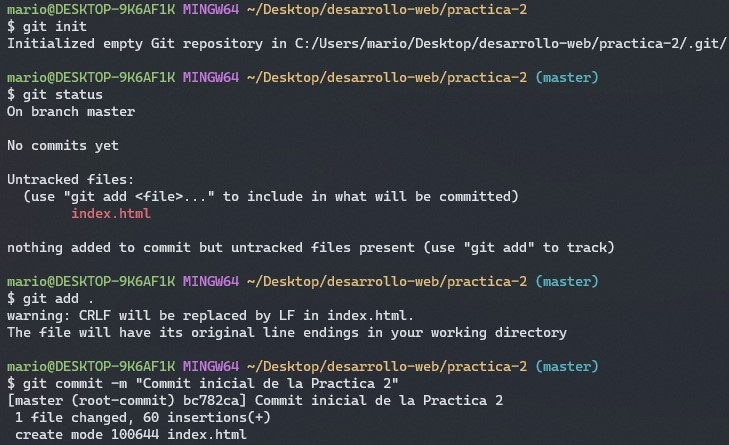
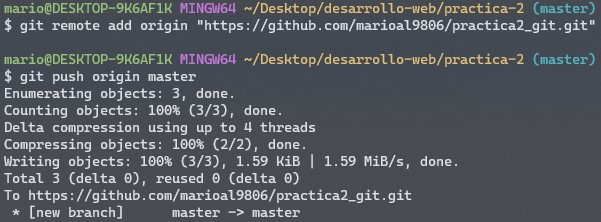
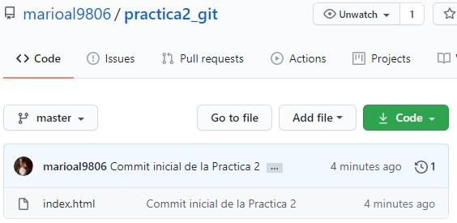

En esta practica se evalua el uso correcto de las herramientas de Control de Versiones.
Para el desarrollo de la actividad se crearon el archivo HTML actual, ademas de un repositorio para contener el proyecto. Las herramientas utilizadas fueron Git y la Linea de Comandos. Adicionalmente, con el uso de un repositorio en la plataforma GitHub, el proyecto se encuentra disponible en linea.
Una vez que se añadio el contenido deseado al documento HTML, se procedio a inicializar el repositorio, seguido de añadir el archivo actual para que Git pueda guardarlo dentro de la historia del proyecto.
Una vez que se añadio el contenido deseado al documento HTML, se procedio a inicializar el repositorio, seguido de añadir el archivo actual para que Git pueda guardarlo dentro de la historia del proyecto.
Finalmente, una vez que los cambios al proyecto se han realizado desde la terminal, podemos acceder al repositorio a través de la página GitHub, dentro de la cual se encuentra la estructura y los archivos utilizados dentro del proyecto.
